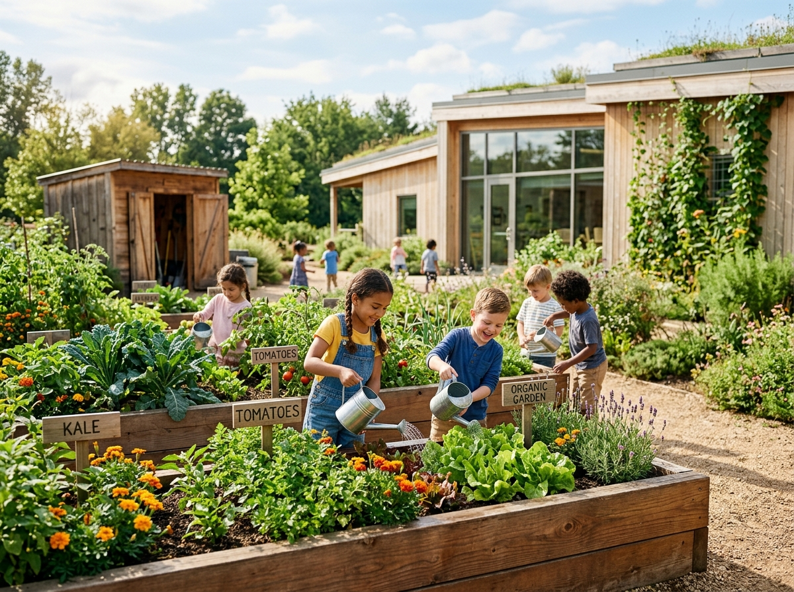
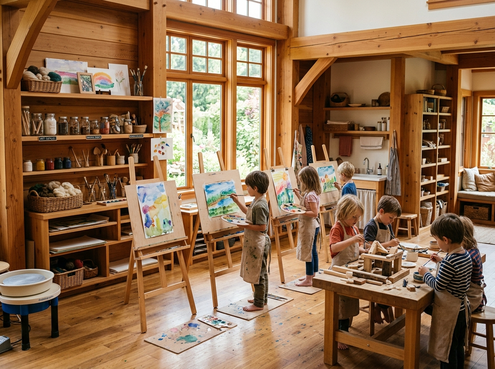
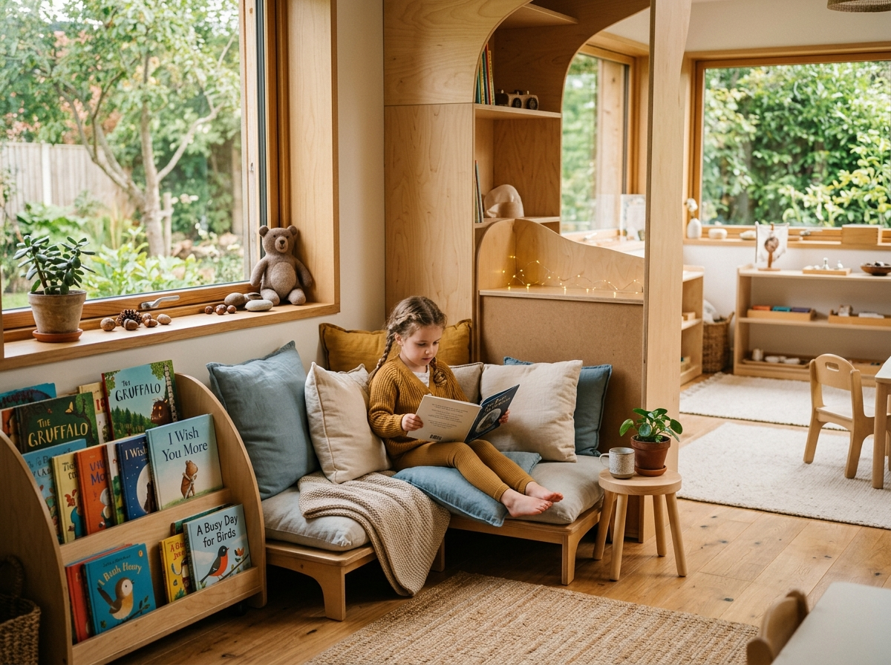

Empowering children through self-paced exploration, outdoor botany, atelier arts, and personalized guidance in a loving family-centered pod.

Uninterrupted 3-hour morning work blocks for deep focus.
Botany beds, sensory gardens, and outdoor exploration.
Integrated painting, clay work, woodworking & music routines.
Intimate observation and individual daily presentation plans.
Natural wooden materials, solar energy, and non-toxic spaces.
Daily photo logs, milestone notes, and transparent fee portal.
Our carefully prepared work cycles empower children to learn through physical manipulation, self-correcting feedback, and peer collaboration.
Care of self, environment, grace, and courtesy activities building motor control and independence.
Isolating sensory qualities (color, dimension, weight, pitch) to structure clear cognitive organization.
Phonetic sandpaper letters, moveable alphabets, storytelling, and early creative writing studios.
Concrete bead materials, golden bead stair, and geometric solids bridging abstract reasoning effortlessly.
Each day is designed around natural energy rhythms — balancing deep individual concentration, collaborative research, outdoor physical play, and community circle reflection.

Movement expansion, spoken vocabulary enrichment, toilet learning, and practical independence routines.
Practical life, sensorial refinement, phonetic language, golden bead math, and cultural geography.
Cosmic education, group research projects, advanced mathematics, geometry, and community outings.
Purposeful physical spaces designed to empower child agency, natural light, and sensory exploration.

Vegetable gardens, composting stations, and rainwater harvesting beds connected to science discovery.
Organic Gardens & Eco Architecture
Easels, clay tables, woodworking benches, and musical instruments integrated into every weekly schedule.
Natural Wood Atelier Studio
Soft reading corners, peaceful resolution peace tables, and sensory quiet zones for self-regulation.
Sensory Sanctuary & Reading Corners“Within 3 months at Little Oak, our daughter grew from an anxious toddler into a confident, independent, and deeply curious reader!”
— The Sharma Family · Casa Primary ParentsOur custom mobile parent portal keeps families connected with daily photo logs, guide observations, attendance tracking, and transparent fee management.
Explore Parent Dashboard →We invite families to visit our prepared environments, observe a live morning session, and meet our guides.
Submit a quick inquiry form to share your child's age and learning goals.
Observe a live morning work cycle and explore our indoor & outdoor spaces.
An informal session with our AMI guides to assess child readiness.
Receive your parent portal login credentials and begin your journey!